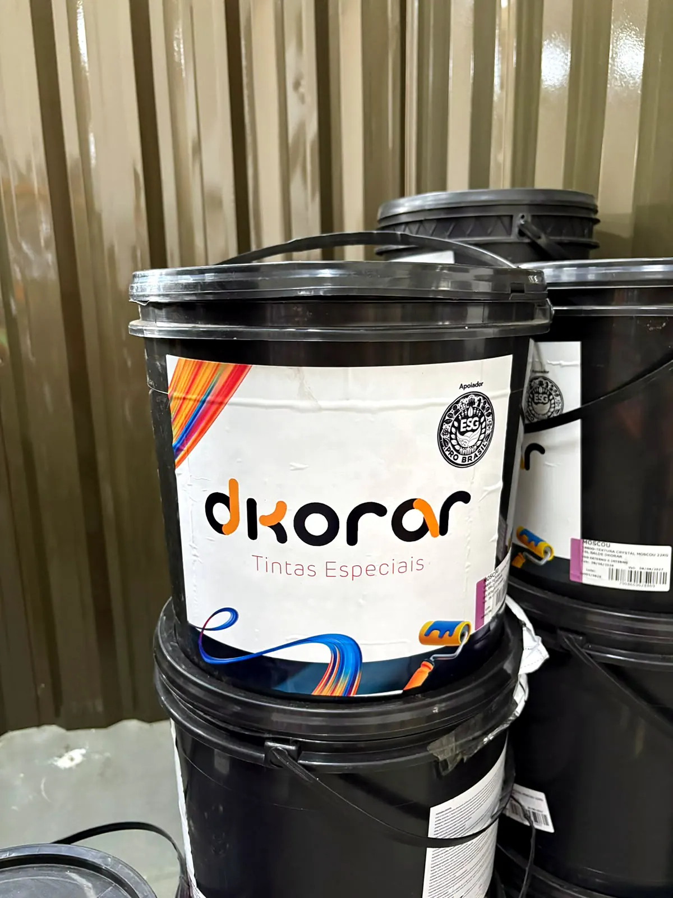

Preparar
Massa corrida para nivelar e deixar a parede lisa antes da tinta. Na loja você encontra a Massa Corrida Coral 25 kg e a massa da Dkorar, a marca própria da casa, para obras de pequeno, médio e grande porte.
- Massa Corrida Coral 25 kg
- Massa Corrida Dkorar
